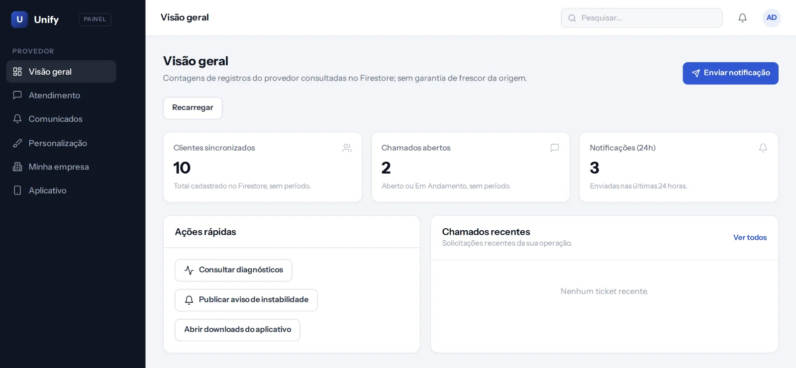
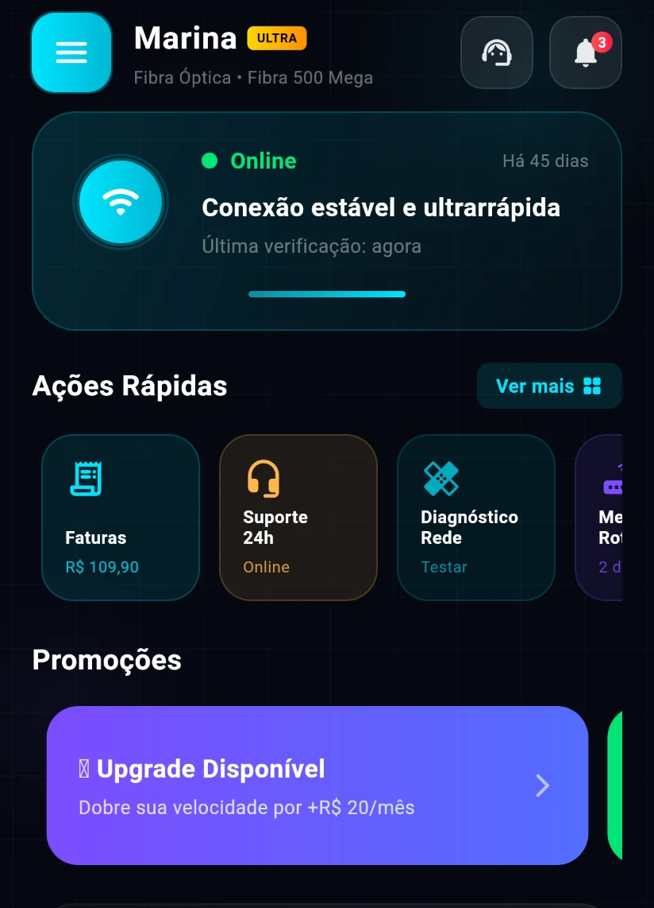
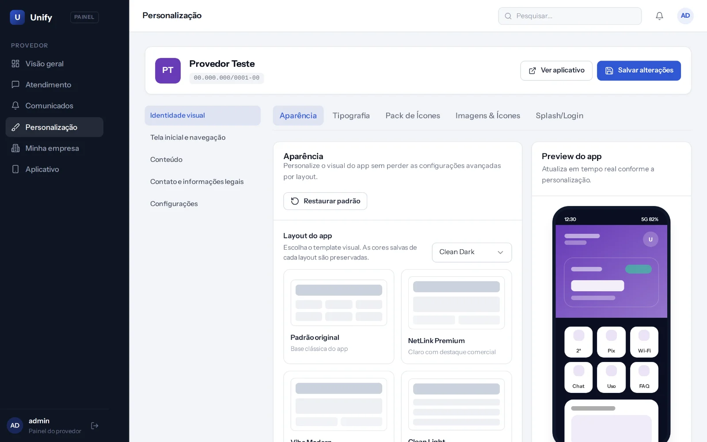

O app do seu provedor, com a sua marca, ligado ao seu SGP.
O assinante paga a fatura, testa a conexão e troca a senha do Wi-Fi sem ligar para você. Você personaliza o app e fala com a base inteira por um painel.


O que o assinante resolve sozinho
Cada item abaixo é uma tela que já existe no app. Os dados vêm do SGP do provedor, em tempo real.
Fatura
- Segunda via na hora. Faturas abertas e pagas, com PIX copia e cola e linha digitável do boleto.
- Desbloqueio em confiança. O assinante bloqueado libera a conexão pelo app, dentro da regra do seu SGP.
- Contrato e plano. Plano contratado, vencimento e valor em aberto.
Conexão
- Diagnóstico de rede. O app testa a conexão passo a passo e diz se o problema está na casa do assinante ou na rede.
- Teste de velocidade, rota e IP. Speed test em servidor próprio, traceroute e consulta do IP.
- Wi-Fi. Ver as redes do roteador e trocar nome e senha.
- Consumo. Quanto de internet o contrato usou no mês.
Atendimento
- Chamados. O assinante abre e acompanha o chamado pelo app.
- Avisos. Notificações push e avisos de instabilidade na região.
- Dúvidas frequentes e dicas. Escritas por você, no painel.
O que você controla no painel
Escolha um item para ver a tela.

Como o app entra no ar
-
Ligamos o app ao seu SGP
Você passa o endereço e o token de integração. Nossa equipe cadastra e guarda essa credencial em área privada, fora do alcance do painel.
-
Você deixa o app com a sua cara
Logo, cores, layout, menus, textos e dúvidas frequentes, tudo pelo painel, sem programar.
-
Geramos o app Android
O aplicativo sai com o nome e a identidade do seu provedor, assinado e pronto para instalar.
-
Seus assinantes entram
O acesso é com CPF ou CNPJ e a senha da central do assinante que ele já tem no SGP.
O que tem hoje, sem enfeite
Preferimos dizer antes do que explicar depois.
Já funciona
- App para Android com a marca do provedor
- Integração com o SGP
- Cinco layouts de app para escolher
- Notificações push e avisos de instabilidade
- Painel web para o provedor
Ainda não tem
- App para iPhone
- Integração com outros sistemas de gestão além do SGP
- Pagamento com cartão dentro do app
Quer ver funcionando com os dados do seu provedor?
Chame no WhatsApp. Mostramos o app e o painel e dizemos o que é preciso do seu SGP para ligar.
Falar no WhatsAppO canal de WhatsApp ainda está sendo configurado. Volte em breve.